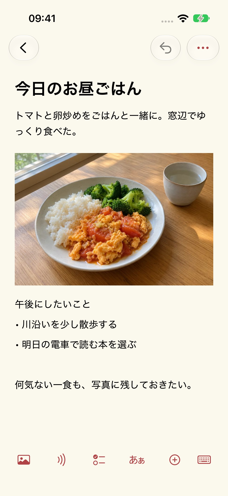
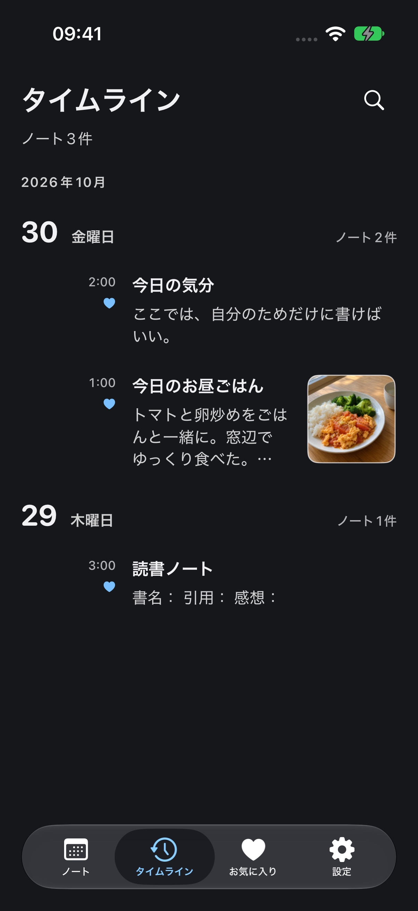

ヘルプとサポート
更新日：2026-10-29
Mowynsを作ったきっかけ
シンプルで使いやすく、完全無料の記録ツールが欲しくて、長い間探していました。それでも自分に合うものが見つからず、Mowynsを作ることにしました。今は自分でも毎日の記録に使っています。
今日には、今日のページ
ノートを開いたとき、目の前にあるのは今日の暮らしであってほしい。カレンダーには選んだ日の記録が並び、昨日のことは昨日に残ります。振り返りたくなったら日付を選ぶか、タイムラインをたどってください。過去の記録を残しながら、新しい一日を始められます。




ノート
今日食べたものを撮って、ひと言添える。やってみたいことを書き留める。文章も写真も録音も、同じノートに残せます。
所属日付
旅行の前に、列車や座席の情報、チケットのスクリーンショット、行きたい場所をそれぞれの日付に保存。当日そのページを開けば、予定をすぐ確認できます。数日分のノートが、自分だけの簡単な旅程になります。
カレンダー
その日の一覧の一番上で下に1回引くとカレンダー、もう1回引くとクイック検索が開きます。カレンダーを閉じた状態で日付の見出しを左右にスワイプすると、前後の日に切り替えられます。
外観
テーマカラーとライト／ダーク表示を選べます。文字サイズや行間も、自分の読みやすさに合わせて調整できます。
新しいノート
「新しいノート」を選び、タイトルと本文を入力します。編集画面の下部ツールバーから写真、録音、チェックリスト、表、ファイルを追加できます。
バックアップと移行
ノートはこのデバイスに保存されます。「設定 → データ管理 → バックアップと移行」で通常・暗号化バックアップの書き出しと読み込みができます。自動同期はないため、バックアップは自分で保管してください。
録音の文字起こし
カメラやマイクの権限は、撮影、スキャン、録音を使うときだけ求めます。写真やファイルはシステムの選択画面から自分で選びます。権限を拒否しても、通常のテキストノートは利用できます。 文字起こしにはシステムの音声認識権限が必要で、処理はデバイス内でのみ行います。デバイスや言語が非対応の場合は録音を保持し、文字起こしが利用できない旨を表示します。クラウド認識には切り替えません。権限はシステム設定で取り消せます。
最近削除した項目
「設定 → データ管理 → 最近削除した項目」でノートを復元できます。完全に削除した後は、以前に書き出したバックアップが必要です。開発者はノートのコピーを持っていません。